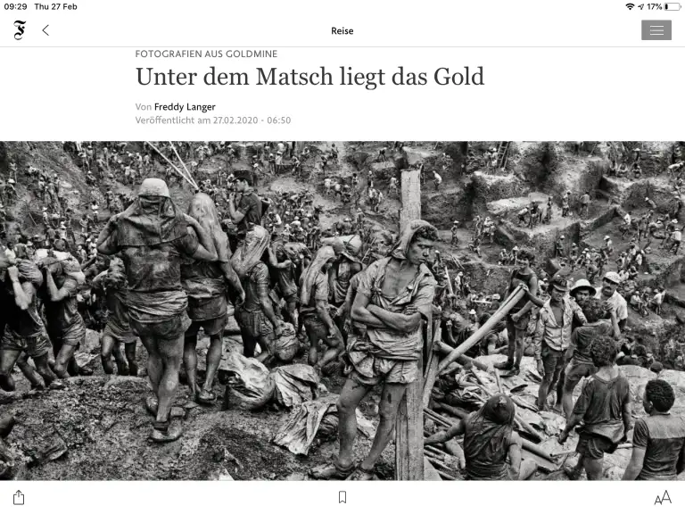
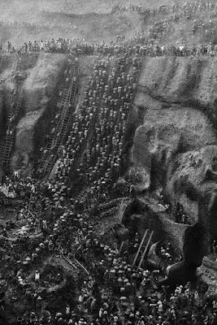

Era 1979,quando no sudoeste do Pará,Genésio Ferreira,dono da fazenda Três Barras,encontra ouro bem próximo à superfície enquanto colocava novas cercas ao lado de um riacho.No começo ele tentou explorar por conta própria,mas em uma época com crises batendo recordes uma atrás da outra,a notícia de "ouro sendo encontrado facilmente" atraiu não só moradores próximos,mas brasileiros de todos os estados.
Inferno na terra

Em 5 semanas já haviam mais de 3 mil cidadãos na fazenda,Genésio inicialmente cobrava uma taxa de 10% dos mesmos,mas de 1980 a 1983 a caçada atingiu seu ápice saindo do controle e o governo toma conta do ambiente.A 30 quilômetros do local foi estabelecida uma cidade inteira,a qual,deu nome à região de Curionópolis em referência ao supervisor coronel Sebastião Curió.A ideia de um local onde você poderia ficar rico em pouco tempo era um sonho,o que não faltam são diferentes histórias dignas de filme sobre trabalhadores encontrando quilos e enriquecendo,alguns foram sábios e se estabeleceram financeiramente,outros gastaram tudo,ficaram ainda mais pobres ou contraíram dívidas e foram mortos.

Mas de forma geral,o cenário da Serra Pelada era de um ambiente hostil;Com uma área de 24 mil metros quadrados e 200 metros de profundidade,o lugar é sitiado por mais de 100 mil trabalhadores e se transforma em um formigueiro humano,as escadas precárias foram apelidadas de "adeus mamãe!" pelos constantes acidentes,os quais,no começo eram considerados trágicos,mas depois viraram episódios "normais e corriqueiros",assim como desmoronamentos nas minas.A fome era severa,corrupção estava por todas as partes,brigas e assassinatos por sua vez era o que não faltava,chegando haver até mesmo a formação de grupos armados que tentavam controlar o ambiente.Não demorou muito até olharem para aquele lugar e o compararem com o inferno.
Fim da caçada
A busca foi tão intensa que o lençol freático da terra foi perfurado,transformando a mina em um grande lago até hoje.Tantos episódios trágicos ocorreram que não se sabe ao certo o número de óbitos,como o desaparecimento de cerca de 90 pessoas resultante do violento protesto em uma ponte .Atualmente a região é propriedade da empresa Vale,e tudo o que resta é aprender sobre as diversas histórias e lições que o ouro tem para contar.